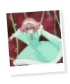
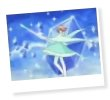
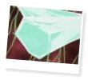
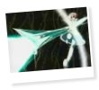

|
I N F O R M A T I O N » P O W E R
In combat, Mannen can be a rather powerful opponent to be up against. Ice itself is a powerful element, and Mannen certainly makes full use of it. During practice fights, Mannen's ice and Goh's fire create a rather explosive impact. In actual fights, ice has the ability to freeze the mayochuu and make it fall asleep, enabling the Pretear to prepare herself and kill the demon bug..
There is only one instance when Himeno prets with Mannen to become the Ice Pretear. As the Ice Pretear, Himeno easily sends a blizzard towards the mayochuu and froze it. Ice Arcubus is the main attack that the Ice Pretear creates to attack the mayochuu. In this sequence, Himeno skates across an ice pond and creates a long stick made of ice, with one end a sharpened and the other an wide open end with the purpose of blasting a powerful beam of ice through the enemy and finishing it off. Mannen's attack is by far my favorite of all the knights. I love the way it's performed, and I've left some screenshots of it below. ^_^
  
Like the other knights, Mannen feels that it is his duty as a Liefe Knight to protect Pretear. Therefore, he would jump at the chance of being Himeno's guard, and he would declare to Himeno that he doesn't need to be protected. He wouldn't hear of staying in Himeno's room to wait for her, he feels the need to go and find her so he can guard her. Mannen's dedication as a knight is shown here, although part of it comes from his independent personality and his eagerness to prove himself.
ainoyumeNET 2002 Trinity. All rights reserved.
|
INFORMATION
/basics
/personality
/thoughts
/partners
/power
/voice
/quotations
|
MEDIA
/anime
/manga
/wallpapers
|
SITE RELATED
/updates
/links out
/link Ice Brat!
/credits
/contact me
|